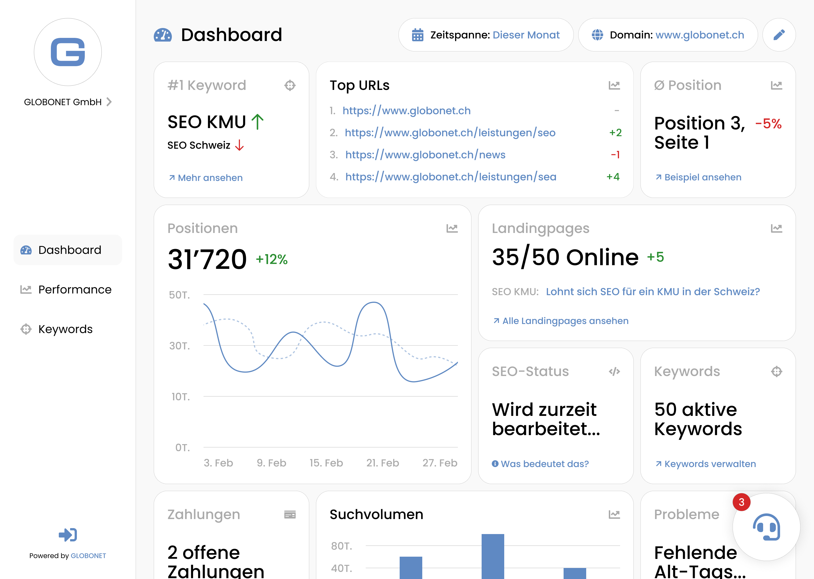
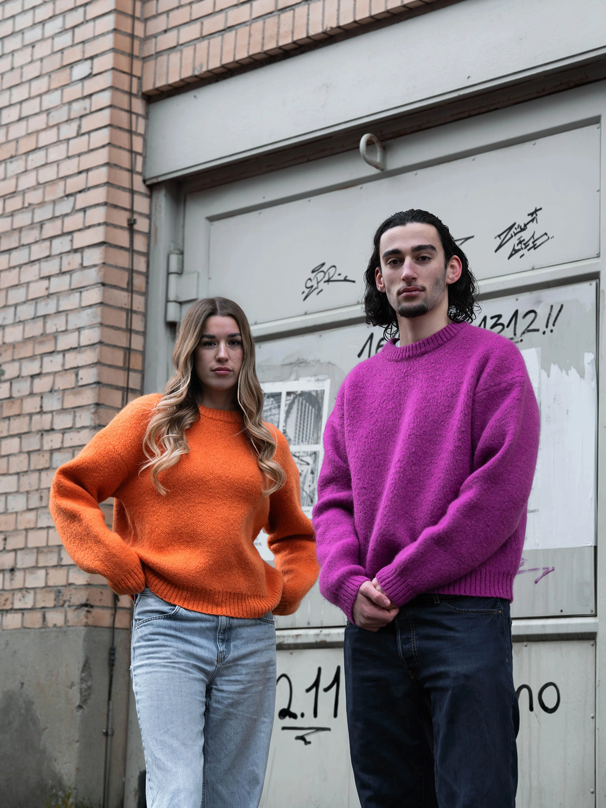
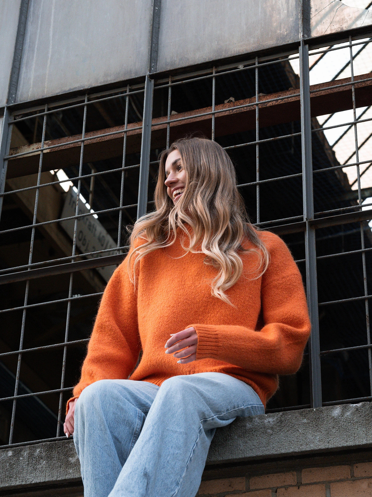
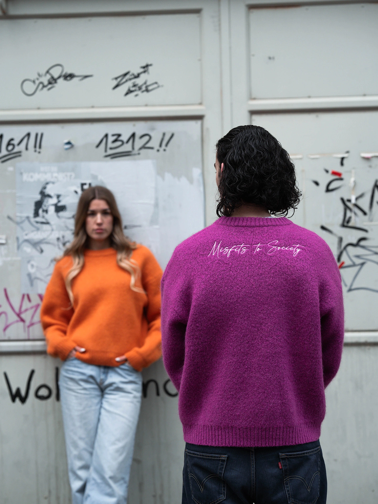

Interface Redesign (2026)
Für das Abschlussprojekt meiner Ausbildung (IPA) habe ich eine interne Kundenplattform neu gestaltet, die — sowohl visuell als auch technisch — veraltet war. Ich habe das Projekt von der Recherche bis zu den fertigen Mockups komplett eigenständig durchgeführt: Zielgruppen definiert, Mitbewerber analysiert, die Informationsarchitektur neu strukturiert und ein vollständiges visuelles Redesign geliefert. Es war meine erste Erfahrung, ein vollständiges Designprojekt unter echtem Zeitdruck durchzuführen und hat es mir viel über Workflow, Zeitmanagement und die Disziplin beigebracht, etwas vom Briefing bis zur Abgabe durchzuziehen.
Auf einen Blick- Typ: UX/UI Design
- Rolle: Design / Projektmanagement
- Dauer: ~83h
- Kunde: GLOBONET GmbH
- Status: Konzept

© Noah Wimmer
Brand Shooting (2025)
Dieses Shooting war ein persönliches Projekt für eine Bekleidungsmarke — vollständig ausserhalb meines Berufsalltags, angetrieben von meiner Leidenschaft für Mode. Ich habe alles übernommen: vom Entwurf der Kleidung und der Standortsuche bis zur Leitung des Shootings und der Nachbearbeitung der finalen Bilder. Die Arbeit mit einem kleinen Team hat mir viel über Kommunikation und Koordination beigebracht, und ein Projekt so weit ausserhalb meines üblichen Bereichs abzuschliessen hat mir eine breitere Perspektive auf kreative Arbeit in anderen Branchen gegeben.
Auf einen Blick- Typ: Modedesign / Fotografie
- Rolle: Creative Direction / Nachbearbeitung
- Dauer: ~28h
- Kunde: Persönlich
- Status: Abgeschlossen




© Noah Wimmer